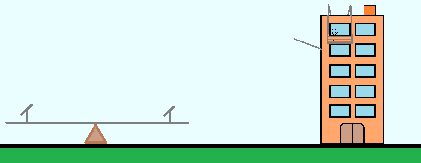

Descrição
A Mecânica é o ramo da Física que estudo o movimento e suas causas,
tudo ao nosso redor está em movimento, até mesmo você que possivelmente pode estar sentado
lendo esse texto, claro que devemos fazer a ressalva que devemos ressaltar qual é o referencial
que estamos tomando como origem do sistemas de coordenadas. Conceito esse essencial para o estudo
da Mecânica.
Aplicações
O movimento está presente em básicamente tudo, nisso as aplicações são as mais
variaveis possiveis. Geologos podem estudar o movimento de placas tectonicas para prever terremotos.
Sinalizações de velocidade máxima nas vias e radares, estipulando valores importantes para prevenir
acidentes. Velocidade que um objeto precisa ter para escapar da atmosfera terreste e ir para o espaço
sideral. Montanha-russa em parques de diversões. Entre muitas outras que podemos discutir ao longo das aulas.
Cinemática
Estuda o movimento dos corpos sem levar em consideração as suas causas. Alguns conceitos
bases são: eixo de coordenadas, posição, deslocamento, velocidade, aceleração, etc.

Dinâmica
Estuda o que causa o movimento, a origem do corpo se mover ou o que altera a direção
do movimento. Exemplos dos conceitos bases são: as três leis de Newton e conservação de energia.
Estática
Estuda as condições de equilibrios dos corpos extensos, como exemplo de conceito temos: torque
e somátoria de forças.
